Общая информация
В этом разделе описан процесс подключения ChatGPT к платформе MarketAut по протоколу MCP.
После подключения ChatGPT сможет использовать инструменты и ресурсы, доступные в вашей диаграмме MarketAut, напрямую из диалога.
Перед началом подключения убедитесь, что:
- аккаунт Wildberries успешно создан и настроен — Настройка аккаунта;
- диаграмма создана, настроена и запущена — Создание и запуск диаграммы ;
- получен MCP-адрес на домашней странице MarketAut — Где найти MCP-адрес .
Важно
Добавление собственного MCP-коннектора выполняется в веб-версии ChatGPT. Доступность функции зависит от тарифа и прав пользователя в рабочем пространстве. В этой инструкции подключение показано на примере веб-версии ChatGPT.
Видеоинструкция
Подключение
-
В левом меню ChatGPT откройте Плагины;
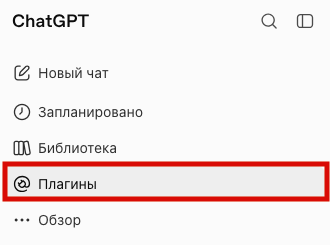
-
Справа нажмите Добавить и выберите Создать MCP-приложение;
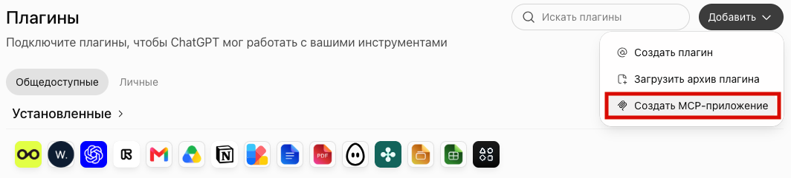
-
На домашней странице MarketAut скопируйте MCP-адрес из блока «Подключите вашего агента»;
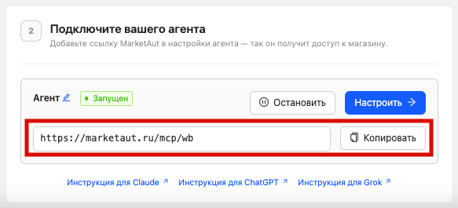
-
Заполните форму создания приложения:
- Название — любое название на ваш выбор, например
Wildberries; - Описание — можно оставить пустым;
- Подключение — URL-адрес MCP-сервера;
- Аутентификация —
OAuth.
- Название — любое название на ваш выбор, например
Скопируйте MCP-адрес из блока подключения агента на домашней странице MarketAut и вставьте его в поле Подключение.
Например: https://marketaut.ru/mcp/wb
Установите флажок подтверждения условий и нажмите Создать.
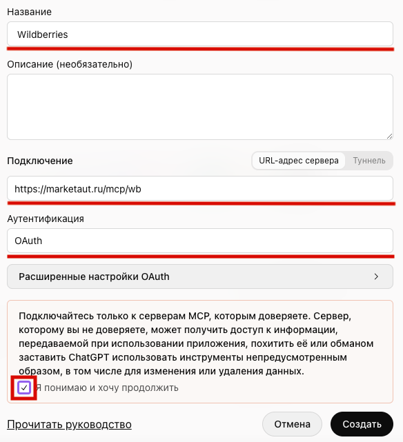
5. Нажмите Перейти к Wildberries;
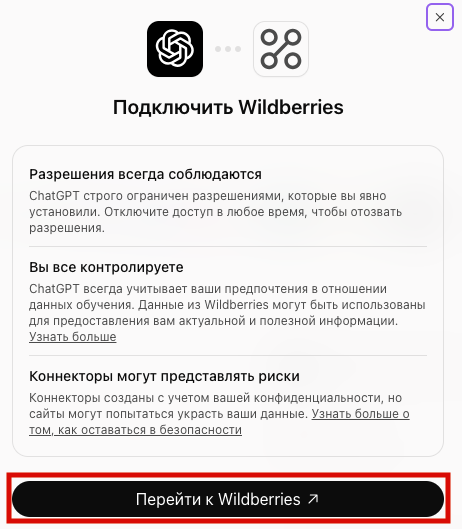
6. В открывшемся окне авторизации нажмите Разрешить доступ.
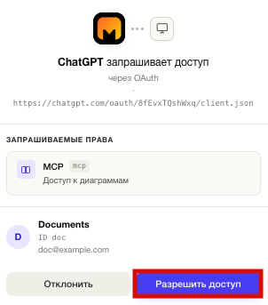
Проверка подключения
Откройте Плагины → Личные. В разделе созданных вами плагинов появится Wildberries.
Нажмите на Wildberries, чтобы открыть его страницу.
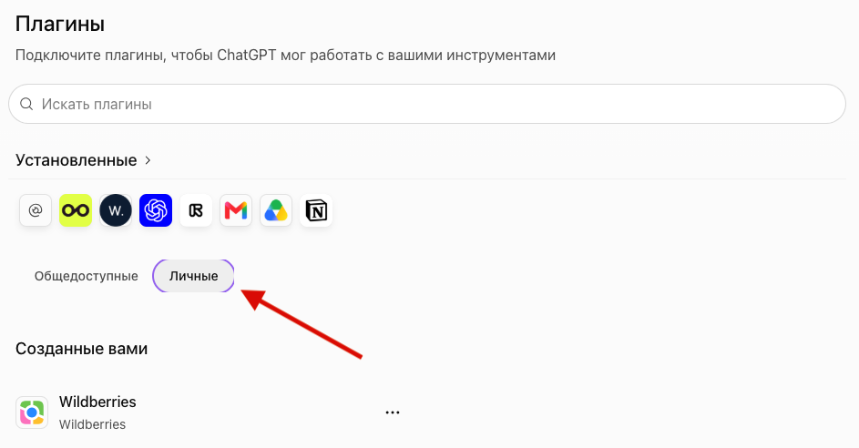
Чтобы посмотреть доступные инструменты, откройте приложение Wildberries в блоке «Приложения» на этой странице.
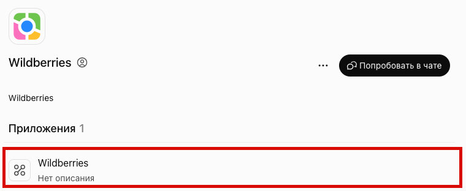
Доступные инструменты будут показаны по группам.
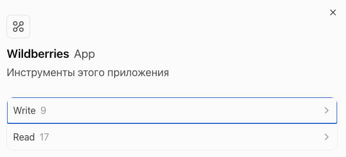
Проверка в чате
Нажмите Попробовать в чате на странице Wildberries. Также можно открыть новый чат, нажать «+» возле поля ввода и выбрать Wildberries.
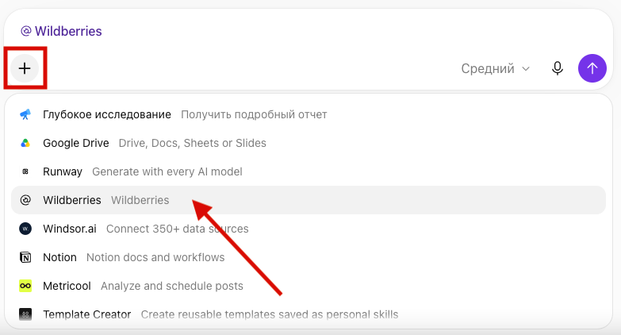
Отправьте запрос, например:
Проанализируй цены конкурентов на повязки для волос и предложи, какую цену выставить мне.
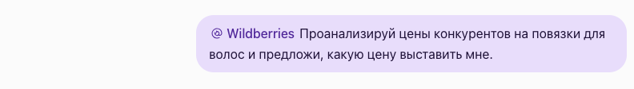
Если подключение работает, ChatGPT обратится к инструментам Wildberries и подготовит ответ.
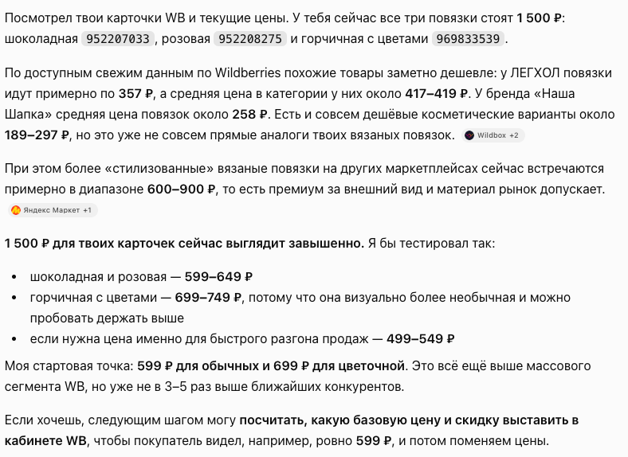
Обновление инструментов
Если вы добавили новые узлы на диаграмму MarketAut, сначала убедитесь, что диаграмма запущена. Остановленная диаграмма не работает, и её инструменты будут недоступны в ChatGPT.
Откройте Плагины → Личные → Wildberries. Нажмите на три точки справа и выберите «Управлять».
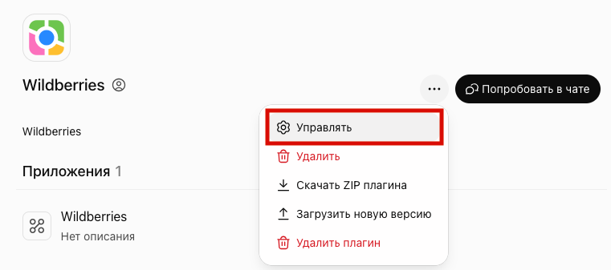
Прокрутите страницу вниз и нажмите «Обновить инструменты». После обновления проверьте список инструментов приложения Wildberries.
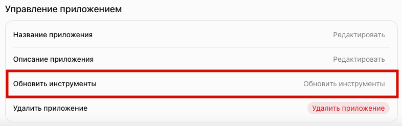
Удаление плагина
Откройте страницу Wildberries, нажмите «…» справа и выберите Удалить плагин.
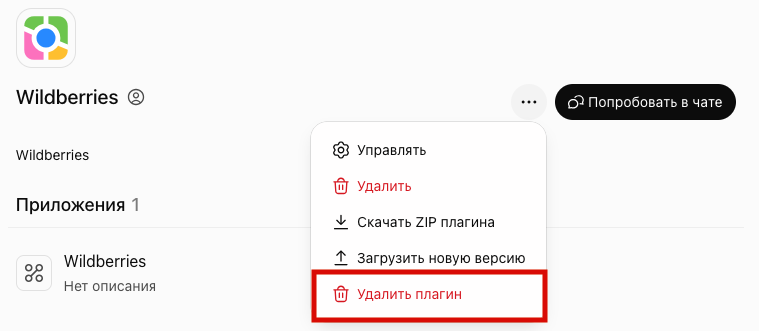